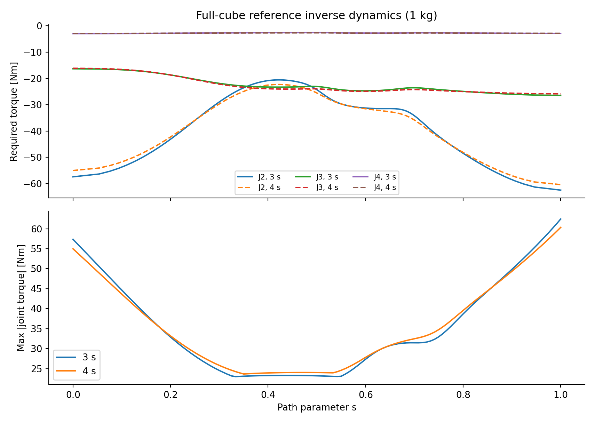
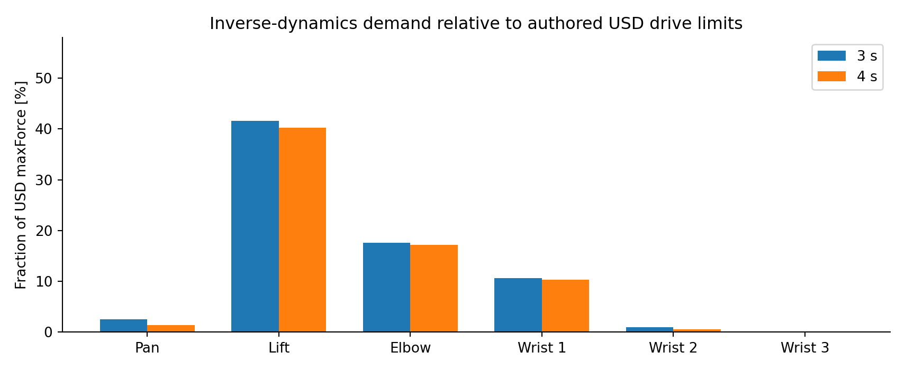

UR5e Payload Research · Modeling
UR5e Modeling & Dynamics
Reconstructing a consistent six-degree-of-freedom robot and payload model before controller development: coordinate frames, FK/IK, Jacobian conditioning, inverse dynamics, and cross-validation against the Isaac Sim articulation.
View project source on GitHub →
1. Physical Model and Coordinate Consistency
The study begins with the six-revolute-joint UR5e and its existing robot description. Joint identity, axis direction, joint order, fixed-base configuration, link transformations, and the world-to-base relationship were checked before constructing the later transportation and control experiments. This stage is not another controller benchmark: it establishes whether the mathematical quantities used by a controller describe the same mechanism executed in Isaac Sim.
The adopted base-to-world rotational convention was diag(−1, −1, 1). Tool0 was held at a fixed orientation for the payload task. Frame consistency matters because a mathematically correct inverse dynamics implementation can still generate physically incorrect joint effort when its joint signs or gravity frame differ from the articulation.

2. Forward Kinematics and Cross-Validation
A representative joint configuration was evaluated independently through analytical forward kinematics and the Isaac Sim model. The reported Tool0 position discrepancy was 0.000206 mm, supporting agreement of the tested kinematic definitions. This numerical result is not hardware pose accuracy, and one checked configuration does not validate every dynamic parameter.

3. Jacobian, Inverse Kinematics and Workspace Feasibility
Differential kinematics connects joint motion and Cartesian transport. Rather than selecting an unrelated inverse-kinematics solution at each point, the accepted path used sequential damped-least-squares IK seeded from the preceding configuration. All 121 reference waypoints converged. The maximum reported Jacobian condition number along this path was approximately 15.53, with a minimum reported singular value of 0.1237 under the adopted numerical convention.
Additional checks sampled 481 robot configurations along and between reference waypoints. No mesh intersection was found among the examined candidates. These observations support the sampled path geometry; they do not establish continuous swept-volume collision safety or actuator feasibility.


4. Rigid-Body and Attached-Payload Dynamics
The analytical model retains the nonlinear coupled inertia, velocity-dependent, and gravitational terms. A fixed, homogeneous 50 mm cube is attached to Tool0; its center of mass is placed 25 mm along the tool’s local +Z axis. Payload inertia and gravity are mapped through the payload CoM Jacobian, rather than estimated from a single lever arm.
The complete loaded model already includes the robot and payload contributions. Adding the same payload correction a second time would duplicate inertia and gravity effects. The subsequent study distinguishes total loaded dynamics from the difference between two loaded models.


5. Why the Physical Model Matters to Later Control
Under the accepted initial 1 kg payload reference, shoulder lift required the largest predicted peak effort, approximately 62.435 Nm. Increasing the transportation time from three to four seconds reduced that peak only to approximately 60.340 Nm: slowing the trajectory lowers inertial demand but does not remove gravity-dependent effort.
| Modeling evidence | Recorded result | Interpretation |
|---|---|---|
| Analytical/Isaac Tool0 comparison | 0.000206 mm | Kinematic agreement at the checked pose |
| Accepted IK sequence | 121 / 121 converged | Numerical feasibility of the reference |
| Maximum Jacobian condition number | 15.53 | No detected singularity along the accepted sequence |
| 1 kg peak shoulder-lift torque | 62.435 Nm | Dominant gravitational and coupled loading |
The result of this stage is a traceable physical model and task geometry. It provides the basis for the subsequent controller comparisons and prevents frame, inertia, or attachment errors from being mistaken for feedback-controller limitations.
6. Validation Boundaries
Project Resources
Source Code & Experiment Records
UR5e analytical modeling, nominal control, ROS 2–PhysX implementation, residual RL training, evaluation routines, and recorded experiment data.
Open Part 3 on GitHubTechnical Reports
The complete integrated investigation and a concise engineering version are provided as two separate PDF files.
Condensed ReportFull ReportProject by Sooyong Kim · Robotics & Autonomous Systems Portfolio